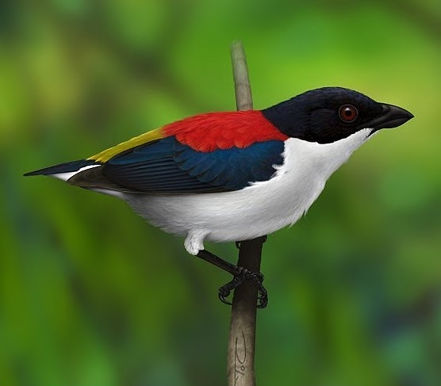
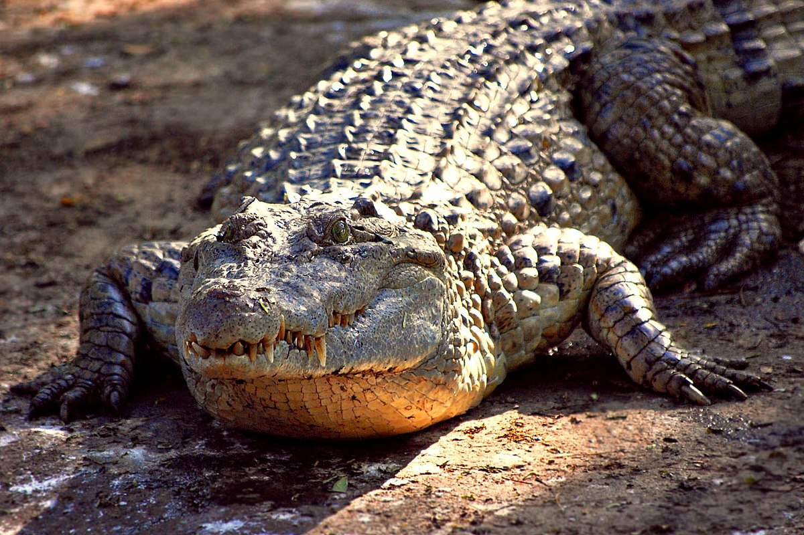
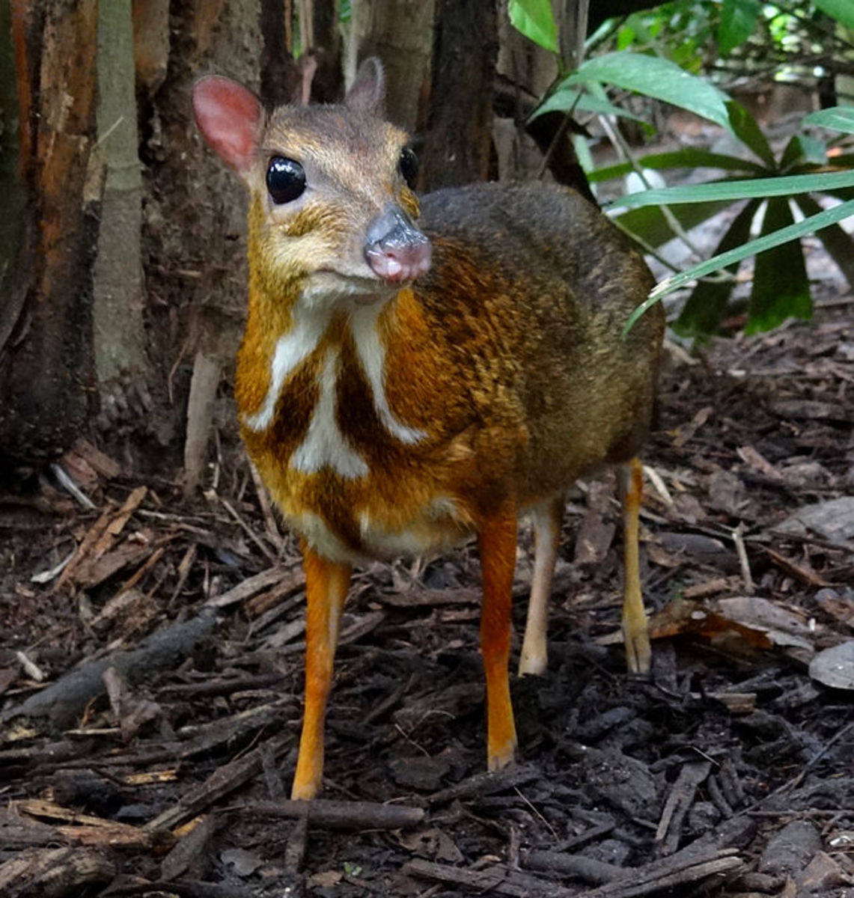
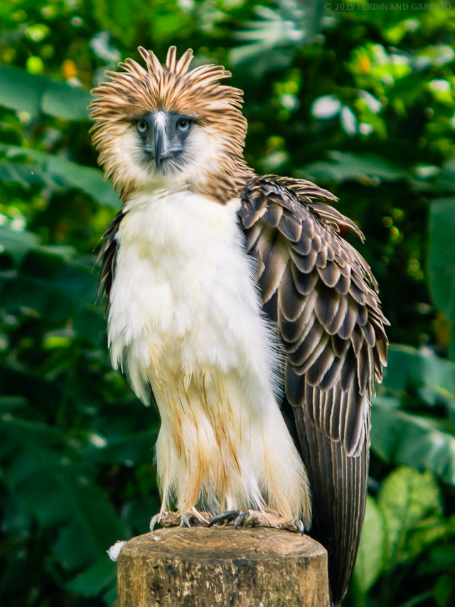
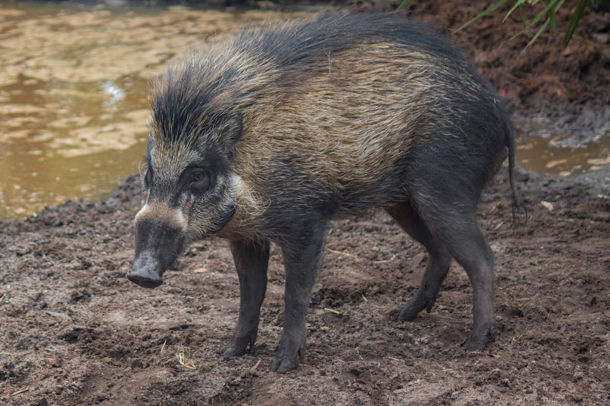
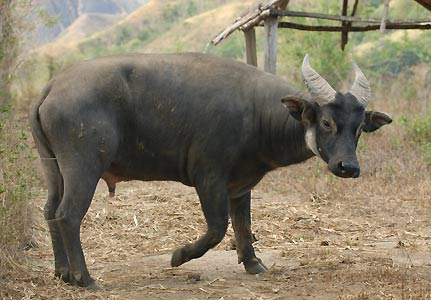
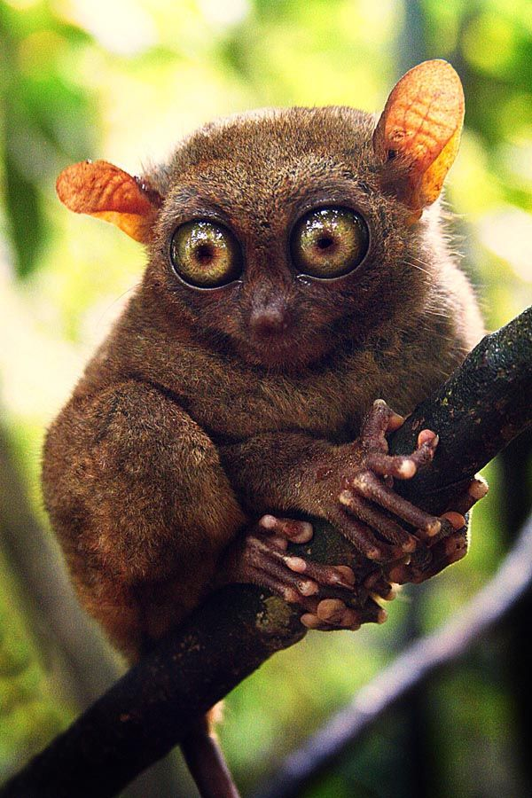
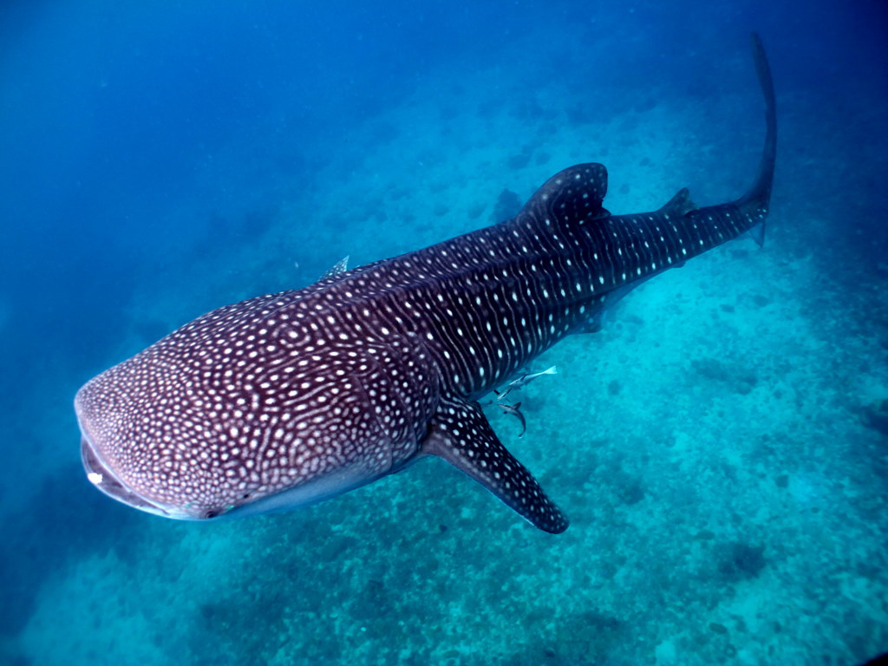

The Unique, Beautiful and Amazing Animals of the Philippines

This bird is also called Quadicolor which refers to the four colours of plumage. The males show up the colours around its body which includes blue, red, yellow and white. This is a frugivorous bird which consuming small fruits and flowers.

The Philippines crocodile is a native crocodile that can be only found in the Philippines. This crocodile has habitat on the Mindoro islands, it causes The Philippines crocodile is also referred to the Mindoro crocodile. Looking different from other crocodiles, Philippine crocodiles have relatively wider snouts and harder spine. The size of this crocodile is quite small, with a length of about 1.5 m and a weight of about 15 kg.

Philippines Mouse-deer is sometimes also called Pilandok in Tagalog. The mammals with the Latin names Tragulus nigricans lives endemic on Balabac Island. Their length is only about 40 cm and the height is only 18 cm. They include nocturnal and solitary living animals.

Often referred to as the ‘monkey-eating’ eagle, it is one of the largest in the world. This imposing bird has a highly arched and powerful bill – giving it the ability to chomp its way through civet cats, flying lemurs and, as the name suggests, even monkeys.

Visayan warty pig is a Philippine native animal that is listed in critically endangered criteria according to the IUCN Red List. This animal can be only found on Negros and Panay Islands. This pig is different from other pig which has a crest on the top of his head to his back. It has a blackish brown colour. Living in the tropics, these pigs eat related to the tropic plants such as roots and fruits. They also eat a variety of agricultural plants.

One of the native mammalian Philippines is Tamaraw (Bubalu mindorensis). Tamaraw is a four-legged animal that is almost like a wild buffalo with relatively smaller in size. It is usually also called a Mindoro dwarf buffalo. This is because the population of them live endemic on the Mindoro island.

Noted as one of the smallest primates on earth, the Tarsier is unique in so many ways it’s simply amazing. It is also listed in the Guinness Book of World Records as having the largest eyes, in proportion to its body, of any animal. Often known as “The World’s Smallest Monkey”, it actually isn’t a monkey at all.

The Whale Shark, or as the natives call it butanding, is one of the mightiest creatures of the sea.Often seen in the regions around Donsol, Sorsogon, from November to June. Today the Butanding Festvial is held annually to celebrate this awesome creatre. Once nearly extinct, today these gentle giants are now a huge draw for scuba divers and other tourists.